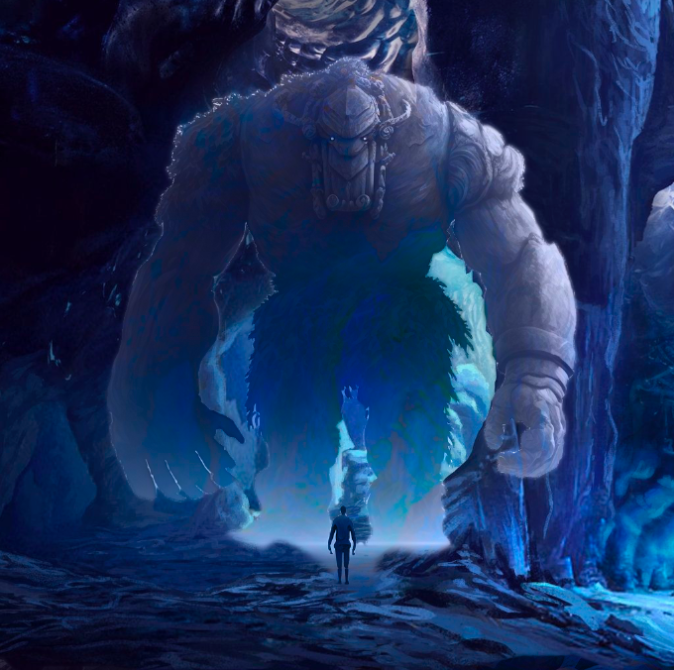
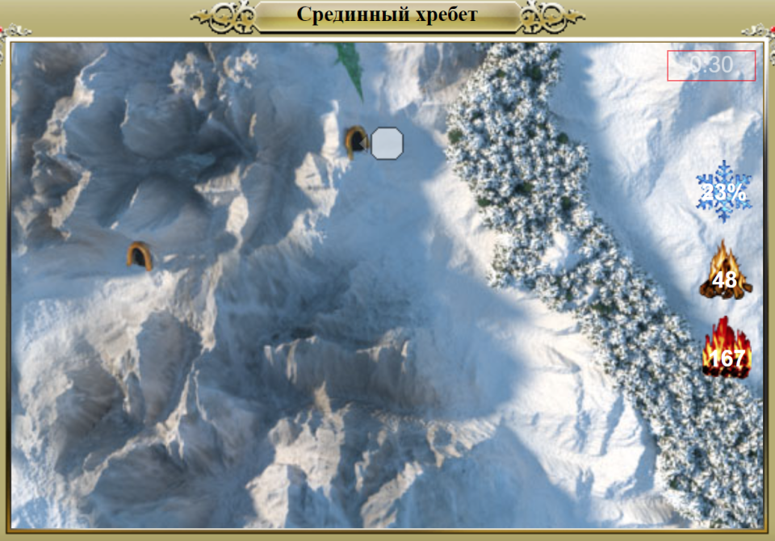
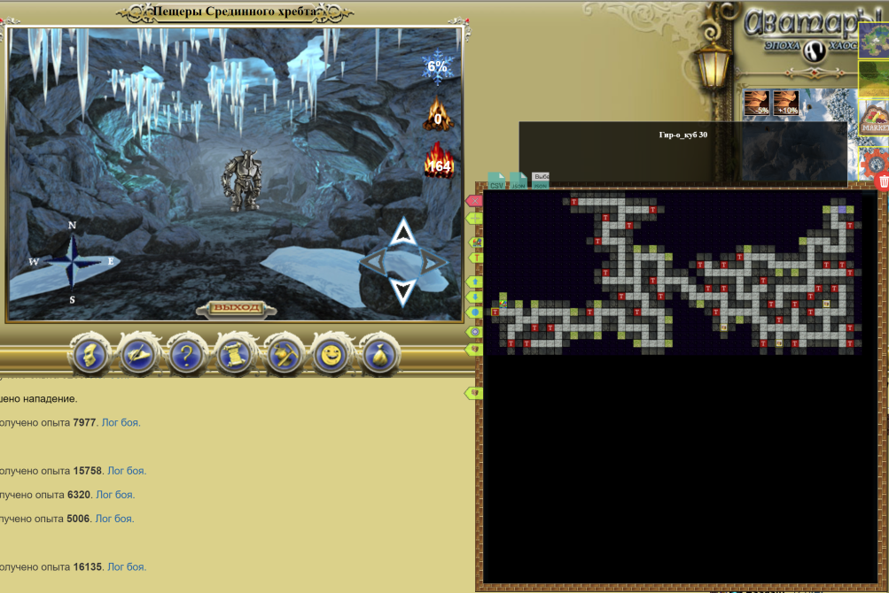
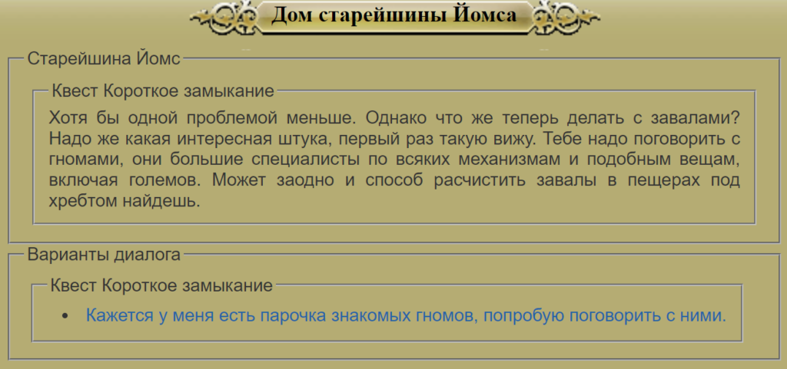
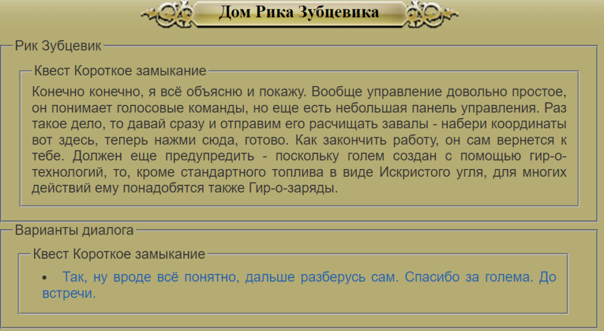

Это цикл статей, посвященный контенту в Северных землях – как пройти, что там есть, что, вероятно, будет и т.д.
Северные земли – контент для высокоуровневых персонажей, прошедших Шпиль Черной башни и Затерянную долину (по сюжетной линии игры), включающий новых монстров и особую механику переохлаждения от перемещения и от особых навыков монстров в бою.
- Как попасть в Северные земли. Снежная башня
- Особенности Северных земель. Локации и контент
- Разломы
- Квест Кровь на снегу.
- Квест Короткое замыкание
Квест “Короткое замыкание”
Описание квеста
Квест на получение особого спутника-голема, доступный после прохождения квеста “Кровь на снегу”. Квест увидел свет в конце 2022 года и предназначен для высокоуровневых персонажей.
- Квест можно пройти в отряде.
- Взять квест можно у старейшины Йомса в его доме (103, 137)
- Основная награда за прохождение квеста:
- Спутник-голем
- 450 000 опыта
- 11 000 серебра
- Случайная Руна Разлома
- Кристаллы спасения работают во всех локациях, в том числе в битве с Големом.
Прохождение. Победа над Големом
Итак, мы пришли на север в деревню Восточная гавань. Направляемся к старейшине Йомсу за квестом. От него узнаем, что Голем-проходчик, созданный, чтобы разбирать завалы после землетрясения в западной части северных гор, “сошел с ума” и нападает на всех, кого видит в зоне поражения. Необходимо устранить угрозу в виде Голема и найти способ расчистить завалы.
Подземелье, в котором обитает Голем, находится на координатах (20; 134) – Пещеры Срединного хребта.
Размер карты: ~60×50
В тупиках подземелья можно найти сундуки с небольшим количеством ресурсов (в том числе волшебными снежками)
Карту для расширения можно найти здесь.

Сам Голем находится в случайной точке подземелья и меняет свою позицию каждый раз при перезаходе в подземелье (больше не меняет позицию).
Голема можно будет заметить за 1 шаг до него. Если шагнуть вперед, то начнется бой с Големом.
Голем достаточно сильный соперник, обладающий особыми режимами своих малых собратьев.

За победу над Големом получаем “Сердце голема” и возвращаемся к старейшине Йомсу за информацией.
Старейшина направляет нас к гномам. Можно пойти к Хали Хитрецу (6: -11) за порцией лора или сразу к нужному гному – Рику Зубцевику (123; 62)

Прохождение. Создание нового Голема
Рик Зубцевик говорит, что может собрать нам нового Голема, но для этого нужно принести ему множество различных ресурсов:
- Обычные:
- Кварц: 1400
- Медная руда: 1100
- Железная руда: 1000
- Корунд: 400
- Алмаз: 400
- Обсидиан: 350
- Искристый уголь: 60.
- Титанитовая заготовка: 3. Можно найти в южном сундуке 10-го этажа Снежной башне или в глубинах Титанитовой шахты.
- Шестеренки големов. Бронзовая, железная, золотая и мифрильная. Добываются с обычных големов в Подземелье гномов (159; 54).
- Гир-о-шестеренки – каждого типа по 1 штуки (от B до S)
- 70 000 серебра
Собираем все необходимое, сдаем Рику и ожидаем сутки до окончания сборки Голема.
Рик запускает Голема расчищать завалы. Нам остается просто подождать 3 дня и вернуться к старейшине Йомсу за наградой.
“[02:06] Система >> Игрок: Вы успешно выполнили задание ‘Короткое замыкание’ и получаете в награду 450000 опыта, 11000 серебряных и Руна KAUNAZ. Теперь вы можете управлять големом.”

Квест завершен, а игрок получает в своё распоряжение нового спутника – Голема. Разберем его особенности подробнее.
Дополнительно про Голема
В внутриигровом описании Голема информации вполне достаточно, чтобы понять, как он работает. Здесь мы лишь сделаем некоторые вычисления и уточнения.
Немного дополнительной информации по режимам:
- Бонус от Поддержки, который увеличивает все параметры игрока, считается после учета бонуса клановой славы и увеличивает в том числе урон, поглощение и магические параметры персонажа. Не влияет на уклонение, вампиризм, отражение урона.
- Бонус от Добычи считается до учета бонуса от событий в шахте. Таким образом, событие в шахте усиливает бонус от добычи голема.
- Бонус от Ремонта, который снижает поломку предметов игрока, считается после печати стали и золотого/алмазного статусов. При этом бонус снижает итоговое значение поломки в процентах, а не в абсолютном значении, то есть если у игрока активирована печать стали и голем дает снижение 10% поломки, то итоговое значение поломки составит 50%-50%*10%=45%.
- Боевой режим – в этом режиме голема можно призвать в бою со 100% вероятностью (если хватает энергии и есть место на поле боя)
Пассивные режимы голема работают даже если Энергия или Овердрайв голема на нуле, но интересно узнать пределы воздействия пассивок голема. Пассивки голема усиливаются от уровня голема, его энергии, овердрайва и типа. Рассмотрим бонусы каждого режима в 3 вариантах:
- Сценарий 1: +10% эффективность. Голем 1 уровня, без энергии и овердрайва. Режим голема соответствует его типу (мифрильный голем и режим ремонта, например).
- Сценарий 2: +70% эффективность. Голем 1 уровня и 100 энергии/овердрайва. Режим голема = типу голема.
- Сценарий 3: +170% эффективность. Голем 100 уровня и 100 энергии/овердрайва. Режим голема = типу голема.
| Режим | Сценарий 1 | Сценарий 2 | Сценарий 3 |
| Добыча. Грузоподъемность и доп. шанс поиска | +3300+16% | +5100+25% | +8100+40% |
| Поддержка. Скорость перемещения и все параметры аватара | +11% и 5% | +17% и +8% | +27% и + 13.5% |
| Ремонт. Снижение поломки | 11% | 17% | 27% |
Как видно из расчетов, бонусы пассивных режимов големов достаточно сильные даже при нулевых тратах на обслуживание голема, что делает его важным предметом для получения высокоуровневым персонажем, а простота переключения типов и режимов голема расширяет его функционал в сложных боях – можно подобрать нужный тип голема под бой со сложным противником и призвать голема в бой или усилить самого игрока режимом поддержки.
Заключение
Квест “Короткое замыкание” является один из немногих высокоуровневых квестов, которые можно спокойно проходить в отряде. Для получения спутника-голема требуется собрать большое количество различных ресурсов из всевозможных локаций, но итоговые бонусы голема и его боевой потенциал будут очень полезны игрокам высокого уровня. Голем вряд ли подойдет для ежедневного использования в битвах, но его пассивные режимы, которые не требуют никаких затрат (при их минимальных бонусах), выгодно выделяют его на фоне обычных питомцев.